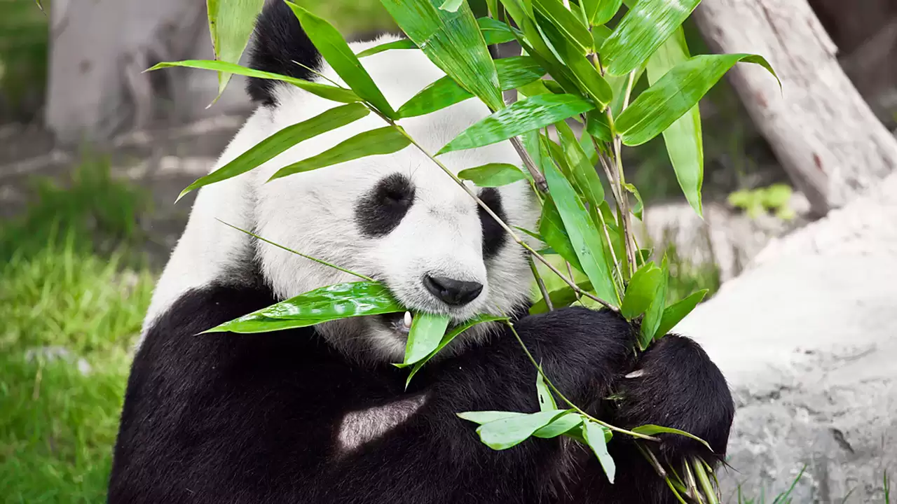
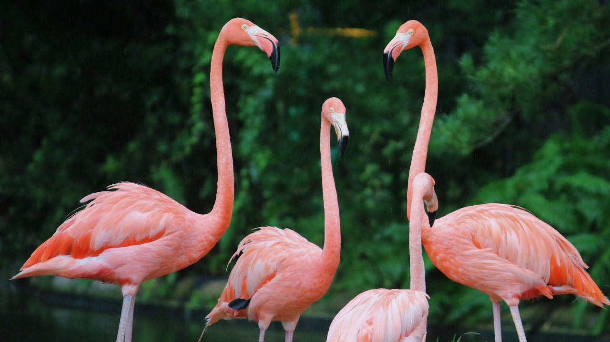
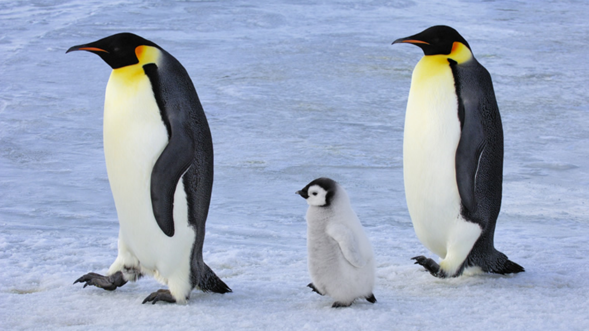

Reuze Panda

Info
De reuzenpanda is een bekend dier vanwege de iconische status als bedreigde diersoort. Door de opvallende lichaamstekening en de bolle vorm van hun gezicht in combinatie met de 'grote' zwarte ogen worden panda's beschouwd als aandoenlijk en aaibaar. De manier waarop de dieren eten, zittend op het achterwerk, doet enigszins menselijk aan. Daarnaast is de neiging tot spelen aanleiding voor de populariteit onder het grote publiek. De reuzenpanda is ondanks het aandoenlijke uiterlijk niet ongevaarlijk voor de mens en kan zich als het moet fel verdedigen.
Kleine Panda

Info
De kleine panda, rode panda of katbeer (Ailurus fulgens) is een bedreigde diersoort die in het oosten van het Himalayagebergte en in het zuidwesten van China leeft. Net zoals de reuzenpanda eet hij bamboe. De vachtkleur is rood- of kastanjebruin, afgezien van witte randjes aan de oren en witte vlekken op de wangen, rond de snuit en boven de ogen. Vanaf de ogen lopen brede, donkere "huilstrepen" omlaag. De staart bevat lichte en donkere ringen en dient als camouflage en om het dier in balans te houden. De rode panda heeft half-intrekbare klauwen, waarmee het dier goed kan klimmen. De lichaamslengte bedraagt 50 tot 64 cm,[4] de staartlengte 25 tot 50 cm en het gewicht 3 tot 6 kilogram.
Flamingo's
Info
De flamingo's (Phoenicopteridae) vormen een familie van grote, steltpotige waadvogels. Alle soorten kenmerken zich door hun lange hals, haakvormige snavel en roze verenkleed. De familie telt zes soorten. Vier flamingosoorten komen verspreid voor over Amerika, inclusief het Caribisch gebied, en twee soorten zijn inheems in Afrika, Azië en delen van Europa. Jonge flamingo's worden met een rozegrijs pluimen donskleed geboren. De pluimen van een volwassen flamingo variëren van zeer lichtroze tot rood. De kleur krijgen ze door bacteriën en bèta-caroteen dat ze uit hun voedsel halen. Een felgekleurde flamingo is wellicht gezonder dan een grijsachtige soortgenoot. Flamingo's in gevangenschap vormen hierop een uitzondering: vaak worden ze in gevangenschap rozegrijs door een tekort aan caroteen in hun voedsel. Tegenwoordig geven steeds meer dierentuinen een aangepast dieet waardoor de flamingo's hun natuurlijke kleur behouden. De knobbel in het midden van de poot van de flamingo is geen knie, maar de enkel.
Olifanten

Info
Olifanten komen verspreid voor in Afrika ten zuiden van de Sahara en in het zuiden en zuidoosten van Azië. Zij zijn de enige nog levende soorten van de slurfdieren, uitgestorven zijn onder andere de mammoeten en mastodonten. Olifanten zijn de grootste levende landdieren. De mannelijke Afrikaanse olifanten kunnen een hoogte van 4 m en een massa van 7000 kg bereiken. Deze dieren hebben verschillende onderscheidende kenmerken, zoals een slurf die wordt gebruikt voor vele doeleinden, met name voor het grijpen van voorwerpen. Hun snijtanden groeien uit tot slagtanden en dienen als hulpmiddelen voor het verplaatsen van objecten, het graven en als wapen tijdens gevechten. De grote oorflappen van de olifant worden gebruikt om de temperatuur van het lichaam te beheersen. Afrikaanse olifanten hebben grotere oren en een holle rug, terwijl Aziatische olifanten kleinere oren hebben een bolle of rechte rug.
Giraffen
Info
De giraffen (Giraffa) zijn een geslacht van evenhoevige zoogdieren uit de familie Giraffidae waarvan de vertegenwoordigers voorkomen in Afrika. Ze zijn bekend om hun lange nek en het vlekkenpatroon op hun vacht. Samen met hun nauwste verwant, de veel kleinere okapi, die een kastanjebruin lichaam, gestreepte poten en een gevlekte kop heeft, vormen de giraffen de familie Giraffidae. Een volwassen giraffe heeft een kop-romplengte van 3,5 tot 4,8 meter en een staartlengte van 76 tot 110 centimeter. Mannetjes worden over het algemeen groter dan vrouwtjes. Vrouwtjes zijn over het algemeen 3,5 tot 4,7 meter hoog en 400 tot 500+ kilogram zwaar. Mannetjes zijn 3,9 tot 5,2 meter hoog en 500 tot 800 kilogram zwaar. Bij uitzondering kan een mannetje 5,3 tot 5,5 meter hoog worden.
Pinguïns
Info
Pinguïns of vetganzen zijn een orde van niet-vliegende zeevogels die alleen voorkomen op het zuidelijk halfrond. De pinguïns behoren tot de orde Sphenisciformes, klasse Aves (vogels). Alle moderne pinguïns behoren tot de familie van de Spheniscidae, maar er zijn uitgestorven soorten die buiten deze kroongroep vallen. De pinguïns zijn gemakkelijk te onderscheiden van andere vogels en ze zijn volledig aangepast aan extreme koude en het leven in de zee. Ze hebben bijvoorbeeld een warm verenkleed. Pinguïns gebruiken hun vleugels om door het water te vliegen net zoals andere vogels door de lucht vliegen. Ze kunnen met een snelheid tot 30 km per uur door het water vliegen. De naam "pinguïn", die waarschijnlijk komt van het Keltische pen gwyn (witte kop), werd oorspronkelijk gebruikt voor de reuzenalk, de inmiddels uitgestorven tegenhanger (geen nauwe verwant) van de pinguïn op het noordelijk halfrond.